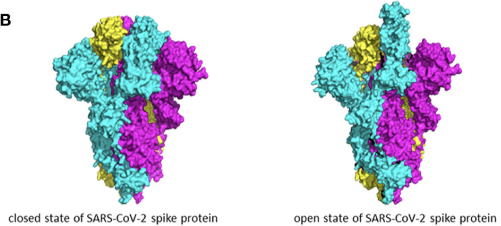
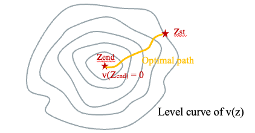
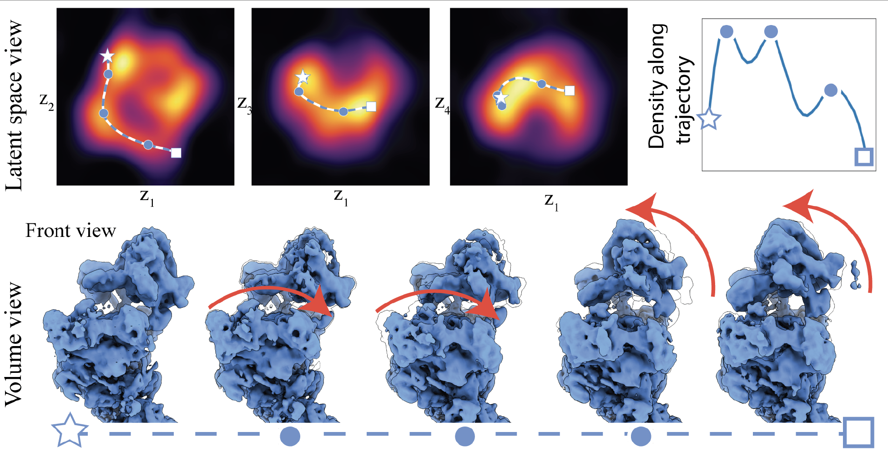
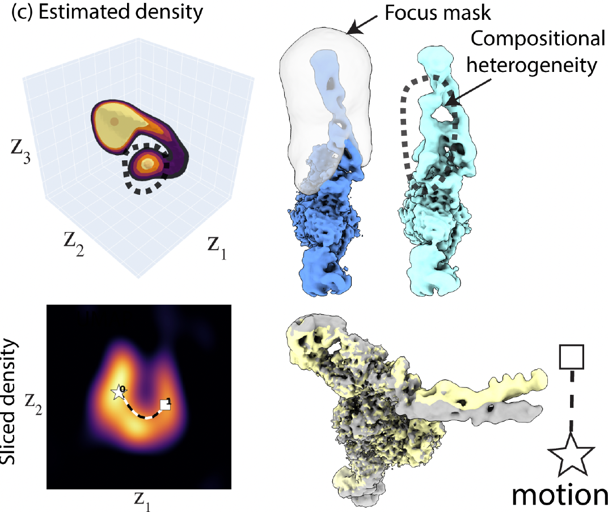
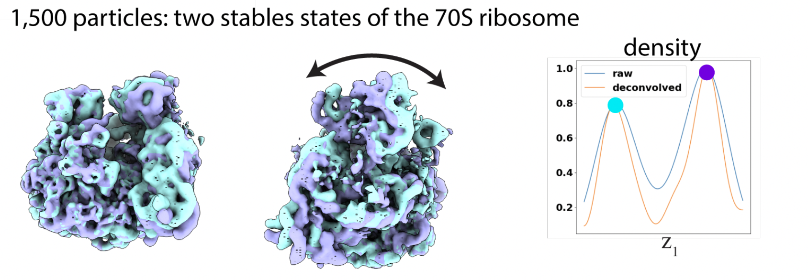
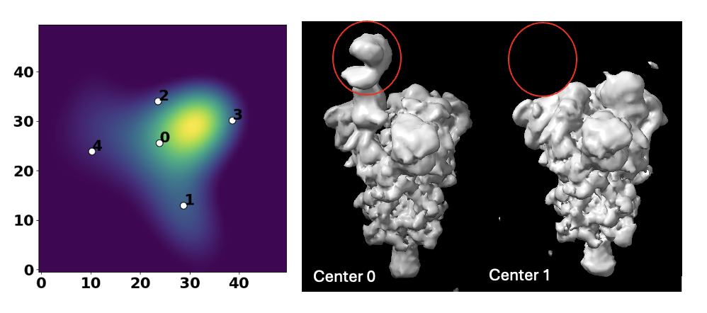
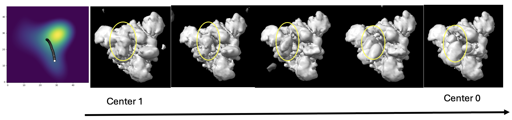

Background
Cryogenic electron microscopy (cryo-EM), a cryomicroscopy technique applied on samples embedding in ice, along with recent development of powerful hardwares and softwares, have achieved huge success in the determination of biomolecular structures at near-atomic level. Cryo-EM takes screenshots of thousands or millions of particles in different poses frozen in the sample, and thus allows the reconstruction of the 3D structure from those 2D projections.
Early algorithms and softwares of processing cryo-EM data focus on resolving homogeneous structure of biomolecules. However, many biomolecules are very dynamic in conformations, compositions, or both. For example, ribosomes comprise of many sub-units, and their compositions may vary within the sample and are of research interest. Spike protein is an example of conformational heterogeneity, where the receptor-binding domain (RBD) keeps switching between close and open states in order to bind to receptors and meanwhile resist the binding of antibody (Taka et al. 2020). When studying the antigen-antibody complex, both compositional and conformational heterogeneity need to be considered.

The initial heterogeneity analysis of 3D structrues reconstructed from cryo-EM data started from relatively simple 3D classfication, which outputs discrete classes of different conformations. This is usually done by expectation-maximization (EM) algorithms, where 2D particle stacks were iteratively assigned to classes and used to reconstruct the volume of that class (Scheres 2012). However, such an approach has two problems: first, the classification decreases the number of images used to reconstruct the volume, and thus lower the resolution we are able to achieve; second, the motion of biomolecule is continuous in reality and discrete classification may not describe the heterogeneity very well, and we may miss some transient states.
Therefore, nowadays people start to focus on methods modeling continuous heterogeneity without any classification step to avoid the above issues. Most methods adopt similar structures, where 2D particle stacks are mapped to latent embeddings, clusters/trajectories are estimated in latent space, and finally volumes are mapped and reconstructed from latent embeddings. Early methods use linear mapping (e.g. 3DVA), but with the applications of deep learning techniques in the field of cryo-EM data processing, people find methods adapted from variational autoencoder (VAE) achieving better performance (e.g. cryoDRGN, 3DFlex). Nevertheless, the latent space obtained from VAE and other deep learning methods is hard to interpret, and do not conserve distances and densities, imposing difficulties in reconstructing motions/trajectories, which are what most structure biologists desire at the end.
Recent developed software RECOVAR (Gilles and Singer 2024), using a linear mapping like 3DVA, was shown to achieve comparable or even better performance with deep learning methods, and meanwhile has high interpretability and allows easy recovery of motions/trajectories from latent space. For this project, I will review the pipeline of RECOVAR, discussed improvements and extensions we made to this pipeline, and present heterogeneity analysis results from the original paper and our SARS-CoV2 spike protein dataset.
Methods
Regularized covariance estimation
Let \(N\) be the dimension of the grid and \(n\) be the number of images. We start with formulating the formation process of each cryo-EM image in the Fourier space \(y_i\in\mathbb{C}^{N^2}\) from its corresponding conformation \(x_i\in\mathbb{C}^{N^3}\) as: \[y_i = C_i\hat{P}(\phi_i)x_i + \epsilon_i, \epsilon_i\sim N(0, \Lambda_i) \]
where \(\hat{P}(\phi_i)\) is the projetion from 3D to 2D after rigid body motion with pose \(\phi_i\), \(C_i\) is the contrast transfer function (CTF), and \(\epsilon_i\) represents the Gaussian noise. RECOVAR will assume that \(C_i\) and \(\phi_i\) were given. This can be done via many existing ab-initio methods. Hence in the following analysis, we will simply fix the linear map \(P_i:=C_i\hat{P}(\phi_i)\).
When poses are known, the mean \(\mu\in\mathbb{C}^{N^3}\) of the distribution of conformations can be estimated by solving:
\[\hat{\mu}:=\underset{\mu}{\mathrm{argmin}}\sum_{i=1}^{n}\lVert y_i-P_i\mu\rVert_{\Lambda^{-1}}^2+\lVert\mu\rVert_w^2\]
where \(\lVert v\rVert_{\Lambda^{-1}}^2=v^*\Lambda^{-1}v\) and \(\lVert v\rVert_w^2=\sum_i|v_i|^2w_i\). \(w\in \mathbb{R}^{N^3}\) is the optional Wiener filter. Similarly, covariance can be estimated as the solution to the linear system corresponding to the following:
\[\hat{\Sigma}:=\underset{\Sigma}{\mathrm{argmin}}\sum_{i=1}^n\lVert(y_i-P_i\hat{\mu})(y_i-P_i\hat{\mu})^*-(P_i\Sigma P_i^*+\Lambda_i)\rVert_F^2+\lVert\Sigma\rVert_R^2\]
where \(\lVert A\rVert_F^2=\sum_{i,j}A_{i,j}^2\) and \(\lVert A\rVert_R^2=\sum_{i,j}A_{i,j}^2R_{i,j}\). \(R\) is the regularization weight.
Our goal at this step is to compute principal components (PCs) from \(\hat{\mu}\) and \(\hat{\Sigma}\). Nevertheless, computing the entire matrix of \(\hat{\Sigma}\) is impossible considering that we have to compute \(N^6\) entries. Fortunately, for low-rank variance matrix only a subset of the columns is required to estimate the entire matrix and its leading eigenvectors, which are just PCs. \(d\) PCs can be computed in \(O(d(N^3+nN^2))\), much faster than \(O(N^6)\) required to compute the entire covariance matrix. Here a heuristic scheme is used to choose which columes to be used to compute eigenvectors. First, all columns are added into the considered set. Then the column corresponding to the pixel with the highest SNR in the considered set is iteratively added to the chosen set, and pixels nearby are removed from the considered set, until there are a disirable number of columns \(d\) in the chosen set. We estimate the entries of the chosen columns and their complex conjugates and let them form \(\hat{\Sigma}_{col}\). Let \(\tilde{U}\in\mathbb{C}^{N^3\times d}\) be orthogonalized \(\hat{\Sigma}_{col}\). It follows that we can compute the reduced covariance matrix \(\hat{\Sigma}_{\tilde{U}}\) by:
\[\hat{\Sigma}_{\tilde{U}}:=\underset{\Sigma_{\tilde{U}}}{\mathrm{argmin}}\sum_{i=1}^n\lVert(y_i-P_i\hat{\mu})(y_i-P_i\hat{\mu})^*-(P_i\tilde{U}\Sigma_{\tilde{U}}\tilde{U}^* P_i^*+\Lambda_i)\rVert_F^2\]
Basically, we just replace \(\Sigma\) in the formula to estimate the entire covariance matrix shown before with \(\tilde{U}\Sigma_{\tilde{U}}\tilde{U}^*\). Finally, we just need to perform an eigendecomposition on \(\hat{\Sigma}_{\tilde{U}}\) and obtain \(\hat{\Sigma}_{\tilde{U}}=V\Gamma V^*\). The eigenvectors (which are the PCs we want) and eigenvalues would be \(U:=\tilde{U}V\) and \(\Gamma\) repectively.
Latent space embedding
With PCs computed from the last step, denoted by \(U\in\mathbb{C}^{N^3\times d}\), we can project \(x_i\) onto lower-dimensional latent space by \(z_i = U^*(x_i-\hat{\mu})\in\mathbb{R}^d\). Assuming \(z_i\sim N(0,\Gamma)\), the MAP estimation of \(P(z_i|y_i)\) can be obtained by solving:
\[\hat{a}_i, \hat{z}_i = \underset{a_i\in\mathbb{R}^+, z_i\in\mathbb{R}^d}{\mathrm{argmin}}\lVert a_iP_i(Uz_i+\hat{\mu})-y_i\rVert_{\Lambda_i^{-1}}^2+\lVert z_i\rVert_{\Gamma^{-1}}^2\]
where \(a_i\) is a scaling factor used to capture the effect of display variations in contrast.
Conformation reconstruction
After computing the latent embeddings, the next question would naturally be how to reconstruct conformations from embeddings. The most intuitive way is to do reprojection i.e. \(\hat{x}\leftarrow Uz+\hat{\mu}\). Nevertheless, reprojection only works well when all the relevant PCs can be computed, which is almost impossible considering the low signal-to-noise ratio (SNR) in practice. Therefore, an alternative scheme based on adaptive kernel regression is used here. Given a fixed latent position \(z^*\) and the frequency \(\xi^k\in\mathbb{R}^3\) in the 3D Fourier space of the volume whose value we would like to estimate, the kernel regression estimates of this form are computed as:
\[x(h;\xi^k) = \underset{x_k}{\mathrm{argmin}}\sum_{i,j}\frac{1}{\sigma_{i,j}^2}|C_{i,j}x_k-y_{i,j}|^2K(\xi^k,\xi_{i,j})K_i^h(z^*,z_i)\]
where \(h\) is bandwitdth; \(\sigma_{i,j}\) is the variance of \(\epsilon_{i,j}\), which is the noise of frequency \(j\) of the \(i\)-th observation; \(y_{i,j}\) is the value of frequency \(j\) of the \(i\)-th observation; \(\xi_{i,j}\) is the frequency \(j\) of the \(i\)-th observation in 3D adjusted by \(\phi_i\). We have two kernel functions in this formulation. \(K(\xi^k,\xi_{i,j})\) is the triangular kernel, measuring the distance in frequencies. \(K_i^h(z^*, z_i)=E(\frac{1}{h}\lVert z^* - z_i\rVert_{\Sigma_{z_i}^{-1}})\) where \(\Sigma_{z_i}\) is the covariance matrix of \(z_i\) which can be computed from the formulation for latent embedding, and \(E\) is a piecewise constant approxination of the Epanechnikov kernel. \(K_i^h(z^*, z_i)\) measures the distance between latent embeddings.
Here comes a trade-off at the heart of every heterogeneous reconstruction algorithm: averaging images is necessary to overcome noise, but it also degrades heterogeneity since the images averaged may come from different conformations. Hence, we have to choose \(h\) carefully. A cross-validation strategy is applied to find the optimal \(h\) for each frequency shell of each subvolume. For a given \(z^*\), the dataset is split into two: from one halfset, the 50 estimates \(\hat{x}(h_1), ..., \hat{x}(h_{50})\) with varying \(h\) are computed, and from the other subset a single low-bias, high-variance template \(\hat{x}_{CV}\) is reconstrcuted by using a small number of images which are closest to \(z^*\). Each of the 50 kernel estimate is then subdivided into small subvolumes by real-space masking, and each subvolume is again decomposed into frequency shells after a Fourier transform. We use the following cross-validation metric for subvolume \(v\) and frequency shell \(s\):
\[d_{s,v}(h) = \lVert S_sV^{-1/2}(M_v(\hat{x}_{CV}-\hat{x}(h)))\rVert_2^2\]
where \(S_s\) is a matrix that extracts shell \(s\); \(M_v\) is a matrix extracting subvolume \(v\); and \(V\) is a diagonal matrix containing the variance of the template. For each \(s\) and \(v\), the minimizer over \(h\) of the cross-validarion score is selected, and the final volume is obtained by first recombining frequency shells for each subvolume and then recombining all the subvolumes.

Estimation of state density
Since motion is what structure biologists finally want, we have to figure out a method to sample from latent space to form a trajectory representing the motion of the molecule. According to Boltzmann statistics, the density of a particular state is a measure of the free energy of that state, which means a path which maximizes conformational density is equivalent to the path minimizing the free energy. Taking the advantage of linear mapping, we can easily relate embedding density to conformational density. The embedding density estimator is given by:
\[\hat{E}(z) = \frac{1}{n}\sum_{i=1}^nK_G(\hat{z_i}, \Sigma_s;z)\]
where \(K_G(\mu, \Sigma;z)\) is the probability density function of the multivariant Gaussian with mean \(\mu\) and covariance \(\Sigma\), evaluated at \(z\), and \(\Sigma_s\) is set using the Silverman rule. The conformational density can be related as following:
\[\overline{E}(z)=\overline{G}(z)*d(z)\]
where \(\overline{E}(z)\) is the expectation of the embedding density \(\hat{E}(z)\); \(\overline{G}(z)\) is the expectation of \(\hat{G}(z)=\frac{1}{n}\sum_{i=1}^nK_G(0,\Sigma_{z_i}+\Sigma_s;z)\), which is named as embedding uncertainty; \(d(z)\) is the conformational density corresponding to \(z\); \(*\) is the convolution operation.
Motion recovery
Given the conformational density estimated from last step, denoted by \(\hat{d}(z)\), start state \(z_{st}\) and end state \(z_{end}\), we can find trajectory \(Z(t):\mathbb{R}^+\rightarrow\mathbb{R}^d\) in latent space by computing the value function:
\[v(z):=\underset{Z(t)}{\mathrm{inf}}\int_{t=0}^{t=T_a}\hat{d}(Z(t))^{-1}dt\]
subject to \[Z(0)=z, Z(T_a)=z_{end}, \lVert \frac{d}{dt}Z(t)\rVert=1; T_a = min\{t|Z(t)=z_{end}\}\]
In simple word, \(v(z)\) computes the minimum inverse density we can have to reach \(z_{end}\) starting from \(z\). \(v(z)\) is the viscosity solution of the Eikonal equation:
\[\hat{d}(z)|\nabla v(z)|=1, \forall z\in B\setminus \{z_{end}\}; v(z_{end})=0\]
where \(B\) is the domain of interest, and \(v(z)\) can be solved by solving this partial differential equation. Once \(v(z)\) is solved, the optimal trajectory an be obtained by finding the path orthogonal to the level curve of \(v(z)\), which can be computed numerically using the steepest gradient descent on \(v(z)\) starting from \(z_{st}\)

Results
Results of public datasets
The original paper of RECOVAR presents results on precatalytic spliceosome dataset (EMPIAR-10180), integrin dataset (EMPIAR-10345) and ribosomal subunit dataset (EMPIAR-10076), all of which are public dataset and could be accessed from https://www.ebi.ac.uk/empiar/.
Results on EMPIAR-10180 focuses on comformational heterogeneity. Three local maxima in conformational density were identified, a path between two of which was identified to show arm regions moving down followed by head regions moving up.

EMPIAR-10345 contains both conformational and compositional heterogeneity. Two local maxima were found, with the smaller one corresponds to a different composition never reported by provious studies. Also a motion of the arm was found along the path.

EMPIAR-10076 is used to show the ability of RECOVAR to find stable states. RECOVAR finds two stable states of the 70S ribosomes.

Results of SARS-CoV2 datasets
We also tested RECOVAR on our own dataset which contains 271,448 SARS-CoV2 spike protein particles, extracted using CryoSparc. Some of these particles are binding to human angiotensin-converting enzyme 2 (ACE2), which is an enzyme on human membrane targeted by SARS-CoV2 spike protein. Therefore, this dataset has both compositional and conformational heterogeneity.
After obtaining an ab-initio model from CryoSparc, we ran RECOVAR with a dimension of 4 and a relatively small grid size of 128. K-Means clustering was performed to find 5 cluster centers among the embeddings.
Here we present two volumes reconstructed from center 0 and center 1, showing a very obvious compositional heterogeneity, where ACE2 is clearly present in center 0 and missing in center 1.

A path between center 0 and 1 was analyzed to study the conformational changes adopted by the spike protein to bind to ACE2. We can see the arm in the RBD region lifts in order to bind to ACE2.

Discussion
RECOVAR has several advantages over other heteogeneity analysis methods. Besides the high interpretability we mentioned before, RECOVAR is proved to be able to discover compositional heterogeneity, which cannot be solved by some popular deep learning methods like 3DFlex. Moreover, RECOVAR has much less hyper-parameters to tune compared with deep learning models. The main hyper-parameter the user needs to specify is the number of proncipal components to use, which is a trade-off between the amount of heterogeneity to capture and computational cost.
However, one problem RECOVAR and many other heterogeneity analysis algorithms share is that it requires the input of a homogeneous model/poses of images. However the estimation of the consensus model is often biased by heterogeneity, while the heterogeneity analysis assumes the input consensus model is correct(a dead loop!). Nevertheless, we would expect this issue to be solved by an EM-algorithm iteratively constructing consensus model and performing heterogeneity analysis. In future we may also be interested in benchmarking on pose estimation errors, and other parameters such as the number of principal components, grid size, and particle number, which were not be done in the original paper.
The other drawback of RECOVAR is that the density-based path recovery approach is computationally expensive. The cost increases expoenentially with dimension. In practice, our NVIDIA 24GB GPU could deal with at most a dimension of 4, which is usually insufficient to capture enough heteogeneity in cryo-EM datasets with low SNR. We have to look at cheaper ways of finding path without estimating densities. We are also interested in methods to quantify the compositional heterogeneity along the path e.g. the probability of SARS-CoV2 spike proteins binding to ACE2 with certain conformation.
The last but not least, it will be much easier for structure biologists to study the heterogeneity if we could extend the movie of density map to the movie of atomic model. This requires fitting atomic models to density maps. Since here the density maps in the movies are very similar, we don’t want to fit from scratch every time. Instead, a better approach would be fitting an initial model and then locally updating each density map.